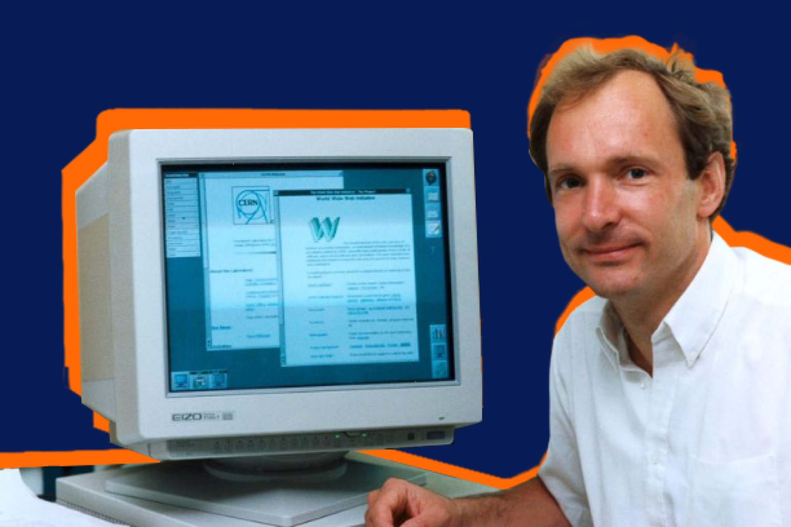
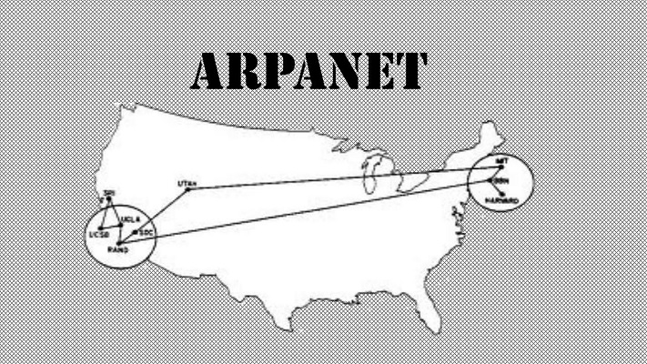

Inicio
O termo internet, como um sistema global específico de redes de IPs
interconectados, é um nome próprio. A Internet também é muitas vezes
referida como Net. A palavra "internet" foi utilizado historicamente,
com inicial minúscula, logo em 1883 como um verbo e adjetivo para se
referir a movimentos interligados. No início dos anos 1970, o termo
internet começou a ser usado como uma forma abreviada do conjunto de
redes técnicas, o resultado da interligação de redes de computadores com
gateways especiais ou roteadores. Ele também foi usado como um verbo que
significa "conectar", especialmente redes. Os termos internet e World
Wide Web são frequentemente usados como sinônimos na linguagem corrente,
é comum falar-se de "navegar na internet", em referências ao navegador
web para exibir páginas web. No entanto, a internet é uma rede mundial
de computadores especial conectando milhões de dispositivos de
computação, enquanto a World Wide Web é apenas um dos muitos serviços
que funcionam dentro da internet. A Web é uma coleção de documentos
interligados (páginas web) e outros recursos da internet, ligadas por
hiperlinks e URLs. Além da web, muitos outros serviços são implementados
através da internet, como e-mail, transferência de arquivos, controle
remoto de computador, grupos de notícias e jogos online. Todos esses
serviços podem ser implementados em qualquer intranet, acessível para os
usuários da rede.

Obra Internet Messenger, de Buky Schwartz em Holon, Israel.
História
A pesquisa sobre a comutação de pacotes começou na década de 1960 e
redes de comutação de pacotes, como Mark I, no NPL no Reino Unido,
ARPANET, CYCLADES, Merit Network, Tymnet e Telenet, foram desenvolvidas
em final dos anos 1960 e início dos anos 1970, usando uma variedade de
protocolos. A ARPANET, em particular, levou ao desenvolvimento de
protocolos para internetworking, onde várias redes separadas poderiam
ser unidas em uma rede de redes. Os dois primeiros nós do que viria a
ser a ARPANET foram interconectados entre o Network Measurement Center
de Leonard Kleinrock na Escola de Engenharia e Ciências Aplicadas da
UCLA e o sistema NLS de Douglas Engelbart no SRI International (SRI), em
Menlo Park, Califórnia, em 29 de outubro de 1969. O terceiro nó da
ARPANET era o Culler-Fried Interactive Mathematics Center da
Universidade da Califórnia em Santa Bárbara e o quarto era o
Departamento Gráfico da Universidade de Utah. Em um sinal precoce de
crescimento futuro, já havia quinze sites conectados à jovem ARPANET até
o final de 1971. Em Dezembro de 1974, o RFC 675 - Specification of
Internet Transmission Control Program, de Vinton Cerf, Yogen Dalal e
Carl Sunshine usou o termo internet como uma abreviação para
internetworking e RFCs posteriores repetiram esse termo. O acesso à
ARPANET foi ampliado em 1981, quando a Fundação Nacional da Ciência
(NSF), desenvolvido a Computer Science Network (CSNET). Em 1982, o
Internet Protocol Suite (TCP/IP) foi padronizada e o conceito de uma
rede mundial de redes TCP/IP totalmente interligadas chamado de internet
foi introduzido. O acesso à rede TCP/IP expandiu-se novamente em 1986,
quando o National Science Foundation Network (NSFNET) proveu acesso a
sites de supercomputadores nos Estados Unidos a partir de organizações
de pesquisa e de educação, o primeiro a 56 kbit/s e, mais tarde, 1,5
Mbit/s e 45 Mbit/s. Tim Berners-Lee usou este NeXTcube no CERN para
criar o primeiro servidor web do mundo. A Organização Europeia para a
Investigação Nuclear (CERN) foi a responsável pela invenção da World
Wide Web, ou simplesmente a Web, como hoje a conhecemos. Corria o ano de
1990, e o que, numa primeira fase, permitia apenas aos cientistas trocar
dados, acabou por se tornar a complexa e essencial Web. O responsável
pela invenção chama-se Tim Berners-Lee, que construiu o seu primeiro
computador na Universidade de Oxford, onde se formou em 1976. Quatro
anos depois, tornava-se consultor de engenharia de software no CERN e
escrevia o seu primeiro programa para armazenamento de informação –
chamava-se Enquire e, embora nunca tenha sido publicada, foi a base para
o desenvolvimento da Web. Em 1989, propôs um projecto de hipertexto que
permitia às pessoas trabalhar em conjunto, combinando o seu conhecimento
numa rede de documentos. Foi esse projecto que ficou conhecido como a
World Wide Web. A Web funcionou primeiro dentro do CERN, e no Verão de
1991 foi disponibilizada mundialmente. A internet foi totalmente
comercializada nos Estados Unidos em 1995, quando a NSFNET foi
desmantelada, removendo as últimas restrições sobre o uso da internet
para transportar o tráfego comercial. A internet começou uma rápida
expansão para a Europa e Austrália em meados da década de 1980 e para a
Ásia no final dos anos 1980 e início dos anos 1990. Gráfico mostrando a
proporção de usuários de Internet a cada 100 pessoas, entre 1996 e 2014,
feita pela União Internacional de Telecomunicações. Desde meados da
década de 1990 a internet teve um enorme impacto sobre a cultura e o
comércio mundiais, como pelo aumento da comunicação instantânea através
de e-mails, mensagens instantâneas, "telefonemas" VoIP, chamadas de
vídeo interativas, com a World Wide Web e seus fóruns de discussão,
blogs, redes sociais e sites de compras online. Quantidades crescentes
de dados são transmitidos em velocidades cada vez mais elevadas em redes
de fibra óptica operando a 1 Gbit/s, 10 Gbit/s, ou mais. A internet
continua a crescer, impulsionando quantidades cada vez maiores de
informações on-line e de conhecimento, comércio, entretenimento e redes
sociais. Durante a década de 1990, estimou-se que o tráfego na internet
pública cresceu cerca 100% ao ano, enquanto estima-se que o crescimento
anual do número de usuários seja de algo entre 20% e 50%. Este
crescimento é muitas vezes atribuído à falta de uma administração
central, que permita o crescimento orgânico da rede, bem como pela
natureza não-proprietária e aberta dos protocolos de internet, o que
incentiva o fornecedor de interoperabilidade e impede qualquer empresa
de exercer muito controle sobre a rede. Em 31 de março de 2011, o número
total estimado de usuários da internet foi de cerca de 2 bilhões de
pessoas (ou cerca de 30% da população mundial). Estima-se que em 1993 a
internet realizou apenas 1% do fluxo de informações através de duas vias
de telecomunicações; em 2000 este valor tinha aumentado para 51% e, até
2007, mais do que 97% de todas as informações telecomunicadas foi
realizada através da rede mundial.


Tim Berners-Lee usou este NeXTcube no CERN para criar o primeiro
servidor web do mundo.
Criadores
ARPANET
A Advanced Research Projects Agency Network (acrônimo ARPANET; em
português: Rede da Agência para Projetos de Pesquisa Avançada) foi uma
rede de computadores construída em 1969 para transmissão de dados
militares sigilosos e interligação dos departamentos de pesquisa nos
Estados Unidos, inicialmente financiada pela então Agência de Projetos
de Pesquisa Avançada (ARPA, atual DARPA) do Departamento de Defesa dos
Estados Unidos. Esta rede foi a primeira a fazer comutação de pacotes à
distância e a implementar o protocolo de rede NCP (Network Control
Protocol, em português, Protocolo de Controle de Rede) e o protocolo de
internet TCP/IP (Transmission Control Protocol/Internet Protocol, em
português, Protocolo de Controle de Transmissão/Protocolo de Internet)
tornando-se o ponto inicial e a base técnica da rede mundial de
computadores, a internet. A metodologia da comutação foi baseada em
conceitos e designs dos cientistas: Leonard Kleinrock, Paul Baran,
Donald Davies e Lawrence Roberts. Os protocolos de comunicação TCP/IP
foram desenvolvidos para a ARPANET pelos cientistas da computação Robert
Kahn e Vint Cerf, com incorporação dos conceitos do projeto francês
CYCLADES, dirigido por Louis Pouzin. À medida que o projeto progrediu,
os protocolos de interligação foram desenvolvidos, através dos quais
várias redes separadas puderam ser unidas em uma rede única. O acesso à
ARPANET foi ampliado em 1981, quando a Fundação Nacional da Ciência
(NSF) financiou a Rede de Ciência da Computação (CSNET). Em 1982, o
conjunto de protocolos de Internet (TCP/IP) foi introduzido como o
protocolo de rede padrão na ARPANET. No início dos anos 80, a NSF
financiou o estabelecimento de centros nacionais de supercomputação em
várias universidades e proporcionou interconectividade em 1986 com o
projeto NSFNET, que também criou acesso aos sítios eletrônicos por
supercomputadores nos Estados Unidos a partir de organizações de
pesquisa e educação. A ARPANET foi desativada em 1990.

Logo da ARPANET